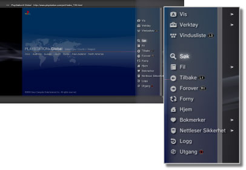

Nettverk > Grunnleggende bruk av nettleseren
Grunnleggende bruk av nettleseren
Vise skjermen

(1) |
Sidetittel |
|---|---|
(2) |
Sideadresse |
(3) |
SSL-ikon |
(4) |
Opptatt-ikon |
(5) |
Nettleser-sikkerhetsikon |
(6) |
Lenke måladresse |
(7) |
Peker |
Metoder for å bla
| Retningsknapper | Beveg pekeren til en lenke. |
|---|---|
| Høyre spak | Bla i den ønskede retningen. |
Bruke menyen
Hvis du trykker på  knappen, vises menyen. Der kan du utføre en rekke operasjoner og angi en rekke innstillinger. Menyen kan vises eller skjules ved å trykke på knappen. Menyelementene er forskjellige i nettlesermodus og vindusmodus.
knappen, vises menyen. Der kan du utføre en rekke operasjoner og angi en rekke innstillinger. Menyen kan vises eller skjules ved å trykke på knappen. Menyelementene er forskjellige i nettlesermodus og vindusmodus.

Angi en adresse (URL)
Når du trykker på START-knappen, vises et tastatur slik at du kan angi en adresse. Hvis du velger  etter at du har angitt en adresse, lukkes tastaturet og siden med angitt adresse åpnes.
etter at du har angitt en adresse, lukkes tastaturet og siden med angitt adresse åpnes.
Kopiere tekst
Du kan kopiere tekst fra en side i nettleseren.
1. |
Bruk venstre spak til å flytte pekeren til det stedet i teksten som du vil kopiere, og trykk deretter på |
|---|---|
2. |
Hold nede |
3. |
Frigjør |
4. |
Velg [Kopi] fra menyen som vises. |
Tips
- Du kan lime inn teksten som du har kopiert med [Lim inn]-knappen på skjermtastaturet.
- Hvis du velger [Søk] i trinn 4, kan du søke på Internett med den kopierte teksten som søkeord.
Skrive ut en webside
For å bruke denne funksjonen, må du først sette opp en skriver ved å velge  (Innstillinger) > [Skriverinnstillinger] > [Skrivervalg].
(Innstillinger) > [Skriverinnstillinger] > [Skrivervalg].
1. |
Åpne websiden som du vil skrive ut, og trykk deretter på |
|---|---|
2. |
Velg [Fil] > [Skriv ut denne skjermen]. |
3. |
Kontroller utskriftsinnstillingene. |
4. |
Velg [Skriv ut]. |
Tips
Skrivere som kan brukes varierer avhengig av landet eller regionen. For mer informasjon, besøk SIE-websiden for din region.
Åpne flere vinduer
Du kan åpne flere vinduer samtidig. Plasser pekeren på lenken, og trykk og hold nede  knappen til lenken åpnes i et annet vindu.
knappen til lenken åpnes i et annet vindu.